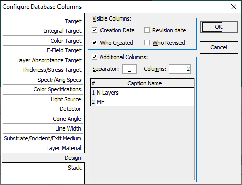
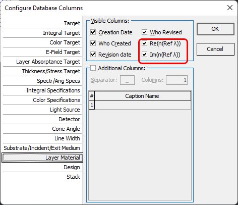

Configure Database Columns
Configure Database Columns
Navigation: OptiLayer Menu Commands > Data Menu > Database Access Dialog >
Configure Database Columns
` <idh_save_database_file.html>`__ ` <idh_modify_database.html>`__ ` <target_editor.html>`__

The “Columns…” command in the database context menu (right-click) opens this dialog. By using the checkboxes for Creation Date, Revision Date, Who Created, and Who Revised, you can choose to display or hide the corresponding columns in the database. Each database, selectable via the tabs on the right side of the dialog, can be configured independently. This feature also enables the addition of customized columns to the database window. When the “Additional Columns” option is activated, filenames containing the Separator symbol (the default value is an underscore ‘_’) are decoded on the fly and displayed in separate additional columns. The number of columns and their Caption Names can be set up in the spreadsheet below. For the Layer Material and Substrate databases, it is possible to enable additional Re(n) and Im(n) columns. If activated, numerical values of the refractive index are shown for the specified Thickness Units Reference Wavelength.


Note: Using the Re(n) and Im(n) columns allows you to sort and filter database items, which is particularly convenient for large databases with many materials.